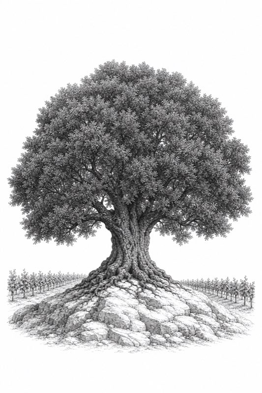
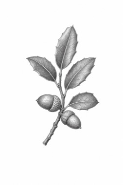
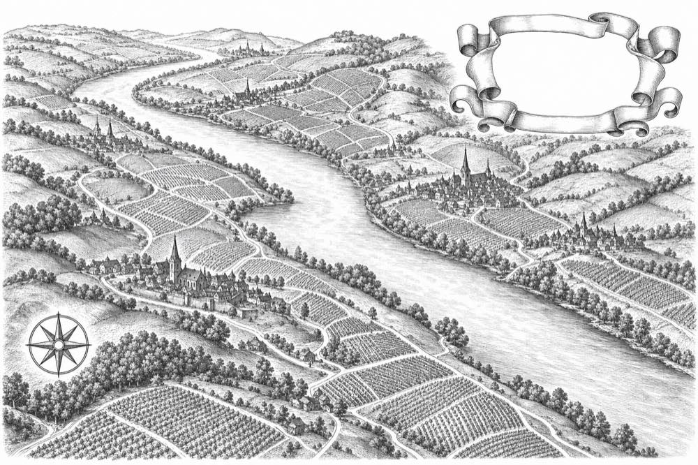
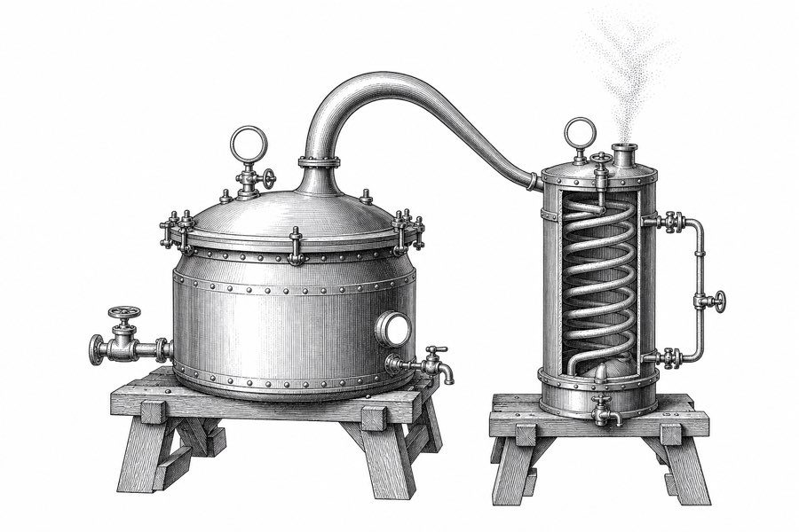
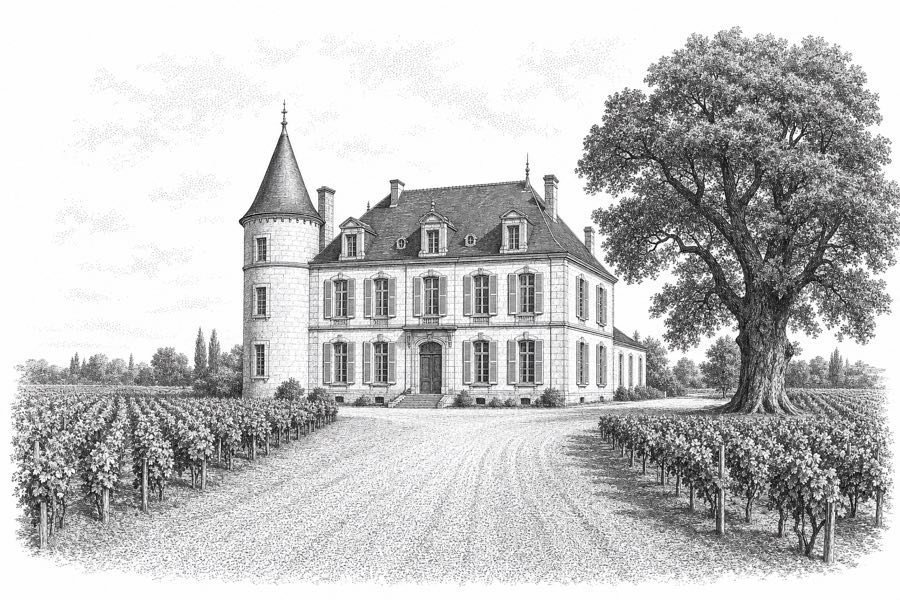
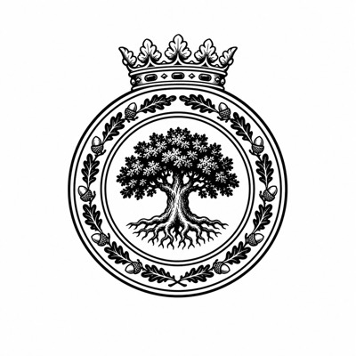
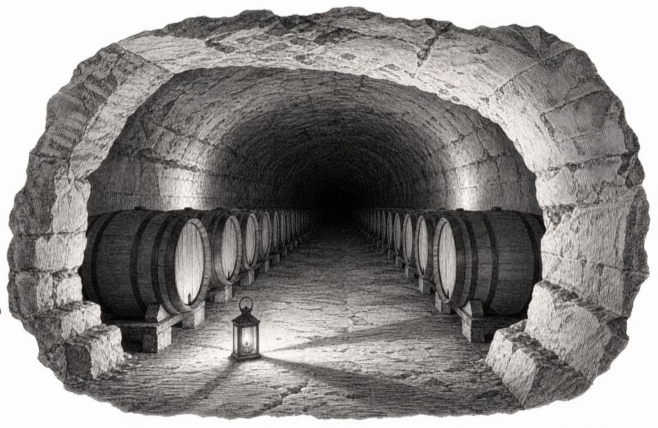
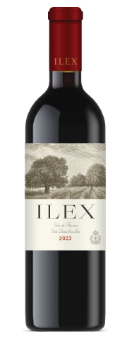

DéclasséL’Interdit is French for “the forbidden.” We chose the name because the law denies this wine its origin. We built the whole experience around that denial, and this document explains how.

An immersive experience for a heritage maison
that happens to have been born this year.
You asked us for a site that drips luxury and exudes scarcity: six thousand six hundred bottles of the first 0,5 % Grand Cru Classé-quality Bordeaux, sold direct, in a category that usually offers a dusty photograph of tied lavender.
“dream big here.”
Non-alcoholic wine sells an apology: clinical bottles, functional promises, “all the taste, none of the…”. Luxury Bordeaux sells the assurance that nothing has changed since 1855.
Ilex fits neither shelf. It has something new to be proud of, and a legal reason it cannot brag: the moment the alcohol left, French law took the name away.

A fully dealcoholised wine may not carry its protected designation of origin. At 0,5 % it is denied even Vin de France.
So: Grand Cru Classé fruit, limestone terroir, oak élevage, and a label forbidden from saying where any of it happened. Sans appellation.
We never had to invent a fiction. The provocation sits in the Official Journal of the European Union, and the appellation system plays the antagonist for free.

“The law forbids us to say
where this wine is from.
The wine, however, is under
no such obligation.”
l’interdit — the first estate proud to be declassified.
Every mention of the origin appears on the site struck through in ink, in plain view. Around the redactions, the dossier documents parcel, soil, barrel and cellar in enough detail that you reach the verdict yourself.
Other luxury brands invented clubs and forged heritage to give their product a world. Every fact on this site is true, down to the regulation number. Only the name is missing — and a public register of 6,600 numbered bottles lets you verify the scarcity instead of taking our word for it.

The whole language is lifted from the bottle.

We use claret and gold as accents only. The certificate blue appears solely inside a keyline frame.
An all-serif system in the Baskerville family. There is no sans serif anywhere on the site.
These recur on the site, the papers, the certificates and the shipping case.
We commissioned nine plates in the style of a 19th-century Bordeaux wine atlas, drawn as one set. The site uses no icons and no stock photography.

Every transition decelerates into place. Key scenes pin, and your scroll drives the timeline. Reveals run as long as 1200 ms on an asymmetric curve, and depth comes from layers drifting at different speeds rather than from anything springing or spinning.
EASE: CUBIC-BEZIER(.16, 1, .3, 1) · REVEALS TO 1200MS · FIVE PLANES OF DEPTH AT MOST
Section by section.
The engraved world of the label assembles at architectural scale: sky, oak, wordmark, vines, in a single timed sequence.
The scene pins. Behind everything, the wordless map of the right bank drifts imperceptibly — a 110-second survey. The record types itself, redactions inking in as it writes; then the prose slides aside and Exhibit A presents the law itself.
Your scroll drains the number — 14,2 % to 0,5 % — while bubbles rise across the full screen, in front of and behind the ghosted still. Then the number departs the frame, and two lines arrive alone:
The alcohol departs.
Its spirit remains.
The page becomes a full-screen field of 6,600 marks — one per bottle, each igniting on its own clock. Hover any dot: its number, its status. Click a free one: it becomes yours to claim. The Acte d’Inscription rises over the field as the only door to purchase.
Membership by petition. First rights to every allocation; the proclamation each November on the anniversary of the Séparation; one dinner a year in a cellar whose address is never printed.

The bottle stands alone on the parchment with a real shadow grounding it and the guardian oak ghosted behind. Beside it, the act:
The register lets a customer verify the scarcity instead of taking our word for it. The redactions turn a legal setback into the detail people describe to their friends. The seal turns checkout into initiation. And a wine that cannot say where it is from hands every journalist their headline.
You will not find the words premium, exclusive or crafted anywhere on the site. The restraint makes that argument, and it is what lets a maison founded this year read like one that has kept a cellar for three hundred.
— everything else falls away.
the living experience · aroutewest.github.io/ilex-preview